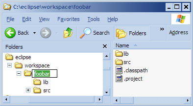
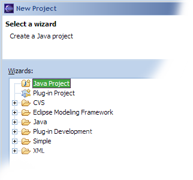
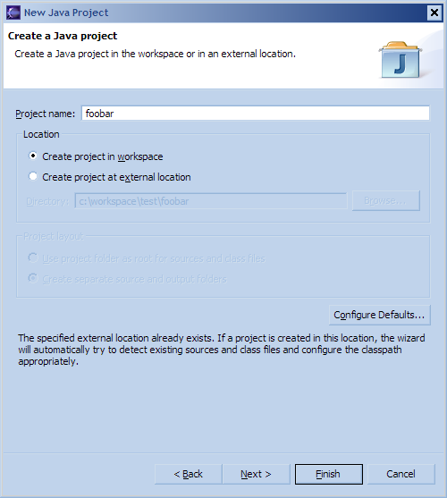

Wicket QuickStart
IDE Demos
IDE Guides
Download
Related projects
Project Info
Development

Eclipse QuickStart Guide
This quickstart is a small guide to get you up and running to start using Wicket within minutes. This project is meant to be a starting point for your first project. If you are looking for examples, please look at the example projects.
This document and project assume you have no special plugins or application servers installed on your machine. In the final section of this document some hints are given to speed up your development even further.
If you have another IDE you'd like to see quickstart support for, don't hesitate to contribute!
Summary
For the more seasoned developers here's a short list of steps to quickstart your Wicket development. All these steps are explained in more detail below.
- download the quickstart project (follow the link in the navigation menu)
- unzip in your workspace
- rename directory to project name
- create new Java project in Eclipse, using previous project name
- run the Start class (Run as - Java application)
-
open browser to
http://localhost:8081/quickstart
Setting Up
Prerequisites
We assume you have the following already installed:- Java 1.4 (or newer)
- Eclipse 3.0 (or newer)
-
C:\eclipse
-
C:\eclipse\workspace
The QuickStart Project
Next you need to download the quickstart distribution project from our sourceforge site.- Download the wicket-quickstart distribution
C:\eclipse\workspace
).
Rename the directory that was just created to your required project name. In the
following the directory name is renamed to 'foobar'.

Running Eclipse
Configuring Eclipse
Now it is time to start Eclipse, if you haven't done so already. Select the workspace where you have installed the Wicket quickstart project. In order to have Eclipse import your project we will create a new Java project using the directory name of your project.- Start the 'New project' wizard in Eclipse.
- Select 'Java project' and click next. 
-
Enter in the 'project name' box the name of your directory (chosen in the
directory rename action of before). Notice the text at the bottom of the
dialog saying
The specified external location already exists. If a project is created in this location, the wizard will automatically try to detect existing sources and class files and configure the classpath appropriately.
 - Leave all other options on their default values and click 'Finish'.
Running the Application
The application has an internal webserver ( Jetty ) which can be used to quickly develop webapplications. All you need to do is to run the application and point your browser to the webserver running from within Eclipse.-
Start the Jetty server by right-clicking on the
src/main/javadirectory in the project and selecting the menu: 'Run as - Java application'. If Eclipse prompts you for a main class, browse to the class named 'Start'. - Start your browser
- Point the browser to the local Jetty server: http://localhost:8081/quickstart .
Next Steps
This section gives some pointers on where to go now.- take a look at the examples
- find more information in the manual
- find more information on the wiki
- take a look at the Jetty launcher plugin to ease your development
Jetty Configuration
The Jetty configuration file is located in the project directory:src/main/resources/jetty-config.xmlJetty is started on port 8081 in order to avoid conflicts with other installed application servers (for instance Tomcat). This way it is easier to test with different application servers. This can be configured in the configuration file. See the Jetty documentation for information on how to configure Jetty. Jetty is started in the
main
-method of the
wicket.quickstart.Start
class.
Customizing the Application
The main page definitions can be found in thesrc/main/java/Index.html
HTML file and the
src/main/java/wicket.quickstart.Index.java
class.